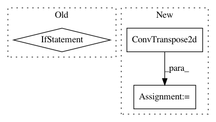

9963f2ded56fb471cd0597a3a64e99eaeb0d64ca,pytorch/pytorchcv/models/others/_linknet.py,BasicBlock,__init__,#BasicBlock#Any#Any#Any#Any#Any#Any#Any#,17
Before Change
self.conv2 = nn.Conv2d(out_planes, out_planes, kernel_size, 1, padding, groups=groups, bias=bias)
self.bn2 = nn.BatchNorm2d(out_planes)
self.downsample = None
if stride > 1:
self.downsample = nn.Sequential(nn.Conv2d(in_planes, out_planes, kernel_size=1, stride=stride, bias=False),
nn.BatchNorm2d(out_planes),)
def forward(self, x):
residual = x
out = self.conv1(x)
After Change
bias=bias),
nn.BatchNorm2d(in_planes//4),
nn.ReLU(inplace=True))
self.tp_conv = nn.Sequential(
nn.ConvTranspose2d(
in_planes//4,
in_planes//4,
kernel_size,
stride,
padding,
output_padding,
bias=bias),
nn.BatchNorm2d(in_planes//4),
nn.ReLU(inplace=True))
self.conv2 = nn.Sequential(
nn.Conv2d(
in_planes//4,
out_planes,
In pattern: SUPERPATTERN
Frequency: 3
Non-data size: 3
Instances
Project Name: osmr/imgclsmob
Commit Name: 9963f2ded56fb471cd0597a3a64e99eaeb0d64ca
Time: 2021-02-11
Author: osemery@gmail.com
File Name: pytorch/pytorchcv/models/others/_linknet.py
Class Name: BasicBlock
Method Name: __init__
Project Name: Zhaoyi-Yan/Shift-Net_pytorch
Commit Name: 3312380c4983dc6f7aff4488ccdd2c6167803c30
Time: 2019-02-27
Author: yanzhaoyi@outlook.com
File Name: models/modules/shift_unet.py
Class Name: InceptionShiftUnetSkipConnectionBlock
Method Name: __init__
Project Name: Zhaoyi-Yan/Shift-Net_pytorch
Commit Name: 3312380c4983dc6f7aff4488ccdd2c6167803c30
Time: 2019-02-27
Author: yanzhaoyi@outlook.com
File Name: models/modules/shift_unet.py
Class Name: InceptionUnetSkipConnectionBlock
Method Name: __init__